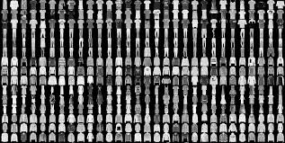

welcome to fashion world
Problem statement
To classify the drawn figure to be a fashion product and predict the product.
Fashion MNIST Training dataset consists of 60,000 images and each image has 784 features
(i.e. 28×28 pixels). Each pixel is a value from 0 to 255,
describing the pixel intensity. 0 for white and 255 for black.
Training Data

training and fitting the model
demo model
Model Architecture
Model training graph
LEARNING GRAPH 1